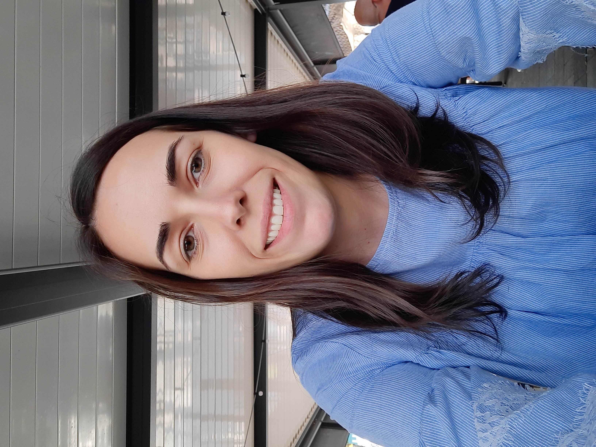

Ljubica Rakić

Proffesional Experience
02/2022 - present Delivery Manager for Digital Solutions, NLB Group
- Lead the delivery of digital solutions, including defining project scope, timelines, and budgets.
- Manage a team of 20+ professionals responsible for implementing and maintaining digital solutions.
- Develop and maintain strong relationships with stakeholders, including internal teams vendors, and customers.
- Monitor project progress and make necessary adjustments to ensure project success.
- Identify and mitigate risks associated with project delivery.
- Provide regular project status updates to senior management.
- Manage project resources, including people, tools, and budgets.
- Develop and maintain project documentation, including project plans, status reports, and change requests.
01/2021 - 08/2022 Solution Architect, NLB d.d.
- Providing analysis and deep understanding of business requirements
- Designing technical solutions - the overall architecture of software solution
- Providing technical guidance to the development and QA team
- Managing risks - identification and mitigation of possible risks associated with the solutions
- Ensuring compliance - that solutions are cpliant with relevant banking industry standards and regulations
- Colaborating with stakeholders - including development team, project manager(s) and business stakeholders to ensure that the solution meets their needs and requirements
- Continuously improving the solution - monitoring and improving the solutions, ensuring that it remains up-to-date and relevant
05/2018 - 01/2021 Software developer, MAHLE Electric Drives Slovenija
- Responsible for software solutions within quality management, Mechatronics Division global
- Administrator and coordinator for Q-DAS software solutions at a global level (qs-STAT, Solara, OQIS, Q-DM Module)
- Analysing requirements, developing and testing web applications in javascript and xml programming languages
- »Problem solving« moderator (8D method)
- MAHLE Compass project - developing methodology for defining goals and monitoring achievements of them
- Certificated process auditor, VDA 6.3 standard, VDA-QMC
- Certificated quality management system auditor, IATF 16949 standard, SIQ
- Certificated quality management system auditor, ISO 9001 standard, SIQ
08/2016 - 10/2017 Software developer, Telekom Serbia
- Member of DWH (Data Warehouse) and BI team
- Data processing using IBM Netezza Aginity Workbench software
- Preparing packages through IBM Framework Manager
- Designing reports using Cognos BI softvere
- Writing SAS programs to prepare data for analysis using SAS Enterprise Guide and SAS DI Studio
- Preparing data processes and treatments and also designing campaigns with SAS Customer Inteligence Studio
Education
- 2016 - 2017 Master's degree in Electrical Engineering
Department of Telecommunication and Information Technologies,
Faculty of Electrical Engineering, University of Belgrade, Serbia
- 2011 - 2016 Bachelor's degree in Electrical Engineering
Department of Telecommunication and Information Technologies,
Faculty of Electrical Engineering, University of Belgrade, Serbia
Skills
Languages:
- Serbian - Native language
- Slovenian - Fluent
- English - Advanced level
- Italian - Basic level
Computer Skills:
- SAS Data Integration Studio, SAS Enterprise Guide, SAS Customer Inteligence Studio
- PL/SQL Developer, SQL Server Management Studio, Netezza Aginity Workbench
- Jira, Confluence
- qs-STAT, Solara, O-QIS
- Cognos, MS Office
Other
Contact Details
Hobbies